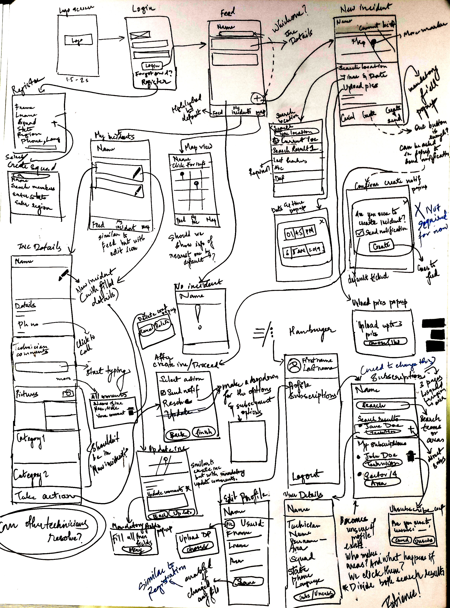
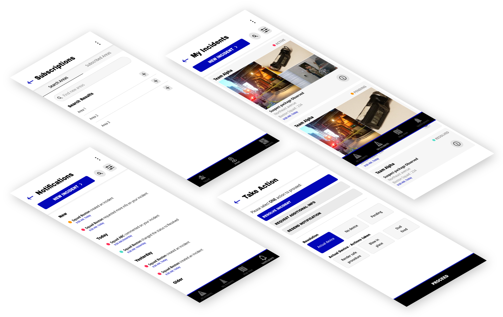
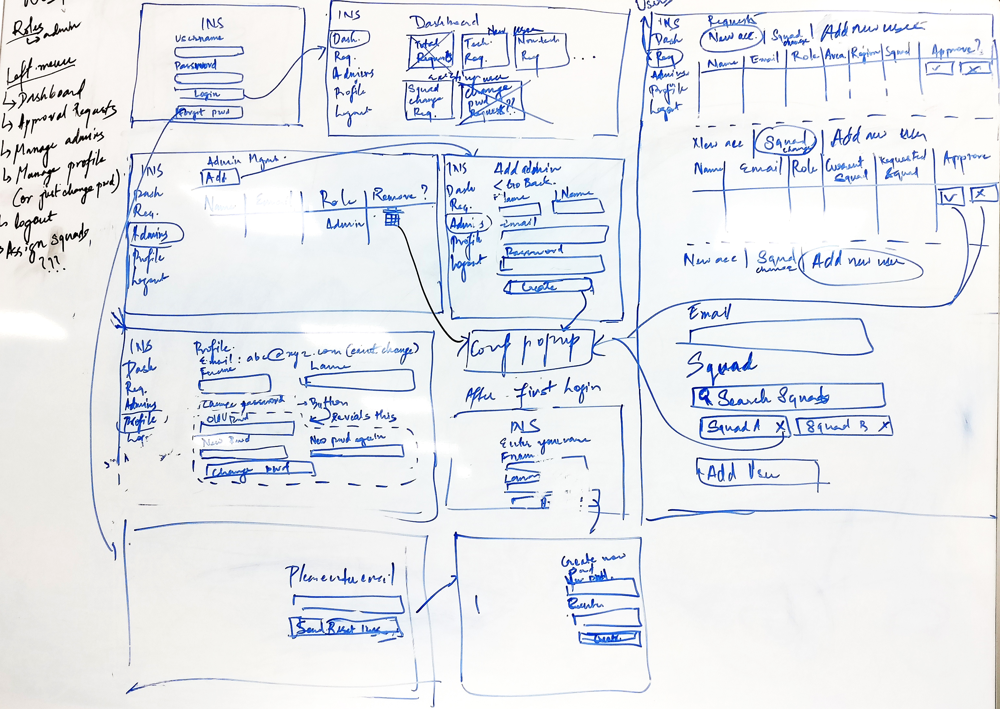
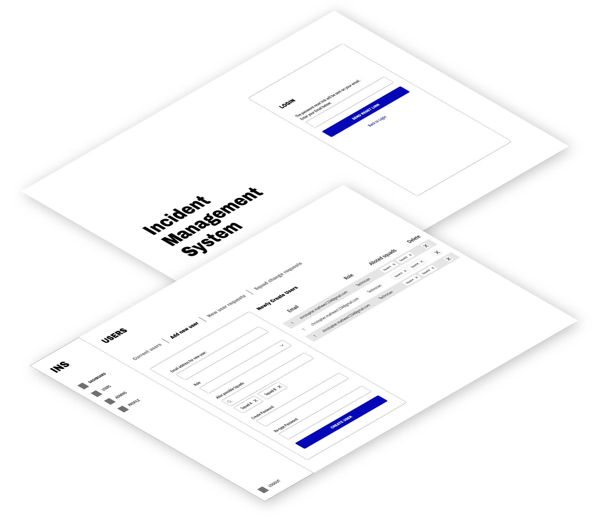
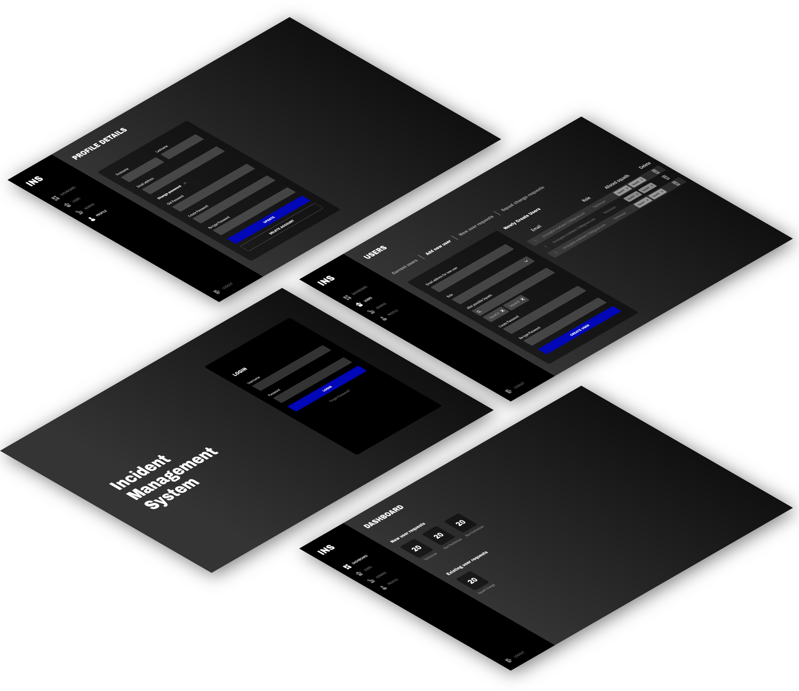

THE PROBLEM
To allow the squads to capture details of suspect package and let other squads know and help about the suspect package resolution.
USER PROFILES
The user profiles can be broadly categorized into 3 types:
- Technician
- Non-Technician
- Admin
SOLUTION
An application which allows to:
- Record details of the suspect package with predefined options for ease
- Change status of the incident - Active/Pending/Resolved
- Allows other technicians to view and comment on the incident
- Allows squads to selectively subscribe to areas/squads
- View incident of subscribed areas/squads in a feed view
USER FLOW
Below given is the user flow of the application.

HAND SKETCHES
Below given are some of the handsketches for the application.

USER INTERFACE
Below given are some of the screens of the application. Since the requirement of the application was to be simple, the wireframes are omitted as they are very similar to the user interface.

WEB APPLICATION
A separate web application has been made for the admins to manage the technicians' and non-technicians' account related activities.
TASK FOR WEB APPLICATION
The web application would serve the following purpose:
- Account creation of technicians and non-technicians
- Squads assignment and change for the technicians
- Management of the admins
HAND SKETCHES
Below given are some of the handsketches for the application.

USER FLOW
Below given is the user flow of the application.

WIREFRAMES
Below given are some of the wireframes for the application.

USER INTERFACE
Below given are some of the screens of the application.
